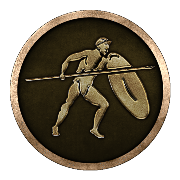
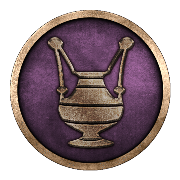
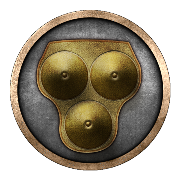
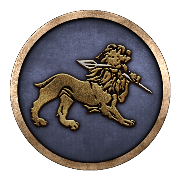
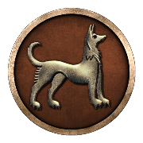
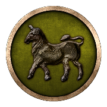
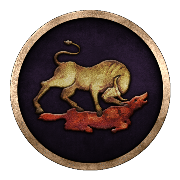
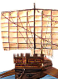

RTR: Imperium Surrectum
RTR: Imperium SurrectumRoman
← all cultures · all factions · wiki index
Internal token roman, localised from ROMAN. 14 factions · 39 of 1,305 provinces at the campaign start · 69 building levels · 3 units
Where these answers come from
Who is in a culture is descr_sm_factions.txt, the only file that assigns one. What a culture lets you build and raise is read off export_descr_buildings.txt: the word culture appears in no requires expression in that file, but the engine's faction list takes a culture token as readily as a faction token, and the 22 culture tokens are exactly the tokens in those lists that are not factions and are not all. Negated clauses count — blocking something is an effect. What its settlements look like comes from descr_cultures.txt and descr_sm_settlements.txt, which disagree about how far up the ladder some cultures go; both are stated. Where nothing in the mod conditions on a culture, the section says so with the number of clauses that were examined.
The factions in it
14 of the 239 factions in descr_sm_factions.txt are Roman. Between them they hold 39 of the 1,305 settlements the campaign file places — 3.0% of the map at turn 0. 3 of them cannot be played and are documented together on factions you cannot play.
The 14 factions
| Faction | Provinces at the start | Default belief | Faction | Provinces at the start | Default belief | Faction | Provinces at the start | Default belief |
|---|---|---|---|---|---|---|---|---|
| Rome | 26 | Italic |  Bruttians | 2 | Italic | Lucanians | 2 | Italic |
 Messapians | 2 | Italic |  Samnites | 2 | Italic |  Capua | 1 | Italic |
 Mamertines | 1 | Italic | Picentes | 1 | Italic | Sarsinates | 1 | Italic |
 Volsinii | 1 | Italic |  Italics | — | Italic | Roman Rebels | — | Italic |
| Roman Rebels | — | Italic | S.P.Q.R. | — | Italic |
What its factions believe
descr_sm_factions.txt gives every faction a default religion. All 14 Roman factions carry the same one. Culture and belief are separate axes in RIS: a culture does not fix a belief.
| Belief | Factions | Who | |||||||||
|---|---|---|---|---|---|---|---|---|---|---|---|
| Italic | 14 | Rome, Bruttians, Lucanians, Messapians, Samnites, Capua, Mamertines, Picentes, Sarsinates, Volsinii, Italics, The House of Aemilii, The House of Cornelii, The Roman Senate |
What its settlements look like
descr_sm_settlements.txt gives this culture its own strategy-map buildings: 6 of the 6 rungs have a block, with 19 wall models between them, drawn from the roman model set.
Every rung of the ladder has a block, so nothing is missing between the two files for this culture.
What is drawn at each size (6)
| Size | Buildings model | Wall models | UI card | Size | Buildings model | Wall models | UI card |
|---|---|---|---|---|---|---|---|
| Village | roman_village_buildings.CAS | — | graeco-roman_village.tga | Town | roman_town_buildings.CAS | 3 | graeco-roman_town.tga |
| Large town | roman_large_town_buildings.CAS | 3 | graeco-roman_large_town.tga | City | roman_city_buildings.CAS | 4 | graeco-roman_city.tga |
| Large city | roman_large_city_buildings.CAS | 4 | graeco-roman_large_city.tga | Huge city | roman_huge_city_buildings.CAS | 5 | graeco-roman_huge_city.tga |
descr_cultures.txt declares a settlement card of its own for 6 sizes, from the roman UI art family, and none of those files is in the mod folder — they resolve into the base game's packed data, which these pages do not read.
Its fort and watchtower are drawn from the same roman art, with the watchtower_roman.CAS watchtower model.
How far its settlements can grow
descr_cultures.txt gives this culture the ladder Village < Town < Large town < City < Large city < Huge city, topping out at Huge city. Every one of the 22 cultures declares the same six rungs with the same population figures, so this is not something that tells one culture from another. The numbers are on the settlement size pages.
Its unrest factors are squalor rate 2300, overcrowding rate 500, capital distance multiplier 0.2, which is what all 22 cultures declare.
What it lets you build
Government levels — 0
No government level names this culture. All 4 levels of the 4 government chains were checked.
Other building levels — 69
The 69 levels
What it blocks — 5
5 building levels are written so that being Roman rules them out: Farms, Farms+1, Farms+2, Farms+3, Farms+4.
What it lets you raise
3 unit types name this culture in a recruitment gate, out of the 743 distinct units the mod's 29,894 recruit lines name. These are the ones open to a Roman faction *because* it is Roman — a faction's own roster and the regional units it can raise where it holds the right province are on its own page.
| Unit | Raised at | Unit | Raised at | Unit | Raised at | ||||||
|---|---|---|---|---|---|---|---|---|---|---|---|
 | Biremes | Trade Port, Shipwright, Dockyard | Quinquiremes | Shipwright, Dockyard | Triremes | Trade Port, Shipwright, Dockyard |
Numbers keyed on it
112 numeric effects are granted specifically because a settlement's owner is Roman.
The 112 effects
15 further effects are granted only where the owner is *not* Roman.
The 15 effects it withholds
| Effect | Where | Effect | Where | Effect | Where | Effect | Where |
|---|---|---|---|---|---|---|---|
| public order (happiness) +2 | Baking Guild (Urban) | taxable income +10 | Baking Guild (Urban) | trade income +1 | Baking Guild (Urban) | public order (happiness) +2 | Brewing Quarter (Urban) |
| population growth +1 | Brewing Quarter (Urban) | taxable income +6 | Brewing Quarter (Urban) | trade income +1 | Brewing Quarter (Urban) | public order (happiness) +3 | Capitoline Temple of Jupiter Optimus Maximus |
| public order (law) +2 to +3 | Court of Law (Civic) | public order (happiness) -10 | Direct Rule | public order (happiness) +4 | Great Theatre (Leisure) | population growth +1 | Hunting Grounds (Rural) |
| public order (happiness) -7 | Indirect Rule | public order (law) +1 to +2 | Magnificent Court of Law (Civic) | public order (happiness) +4 | Theatre (Leisure) |
Its own character in the files
| Portrait set | roman | Counted as civilised | yes | AI assist threshold | 0.5 | Fort cost | 3,000 |
| Watchtower cost | 1,000 | Agents | spy 800, assassin 1,000, diplomat 750, merchant 750, admiral 200 |
16 of the 22 cultures share this civilised setting and 1 share this portrait set.